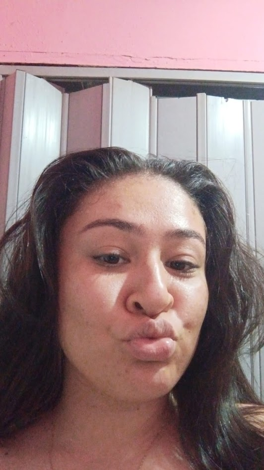
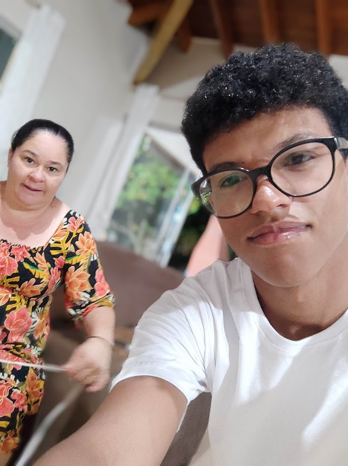
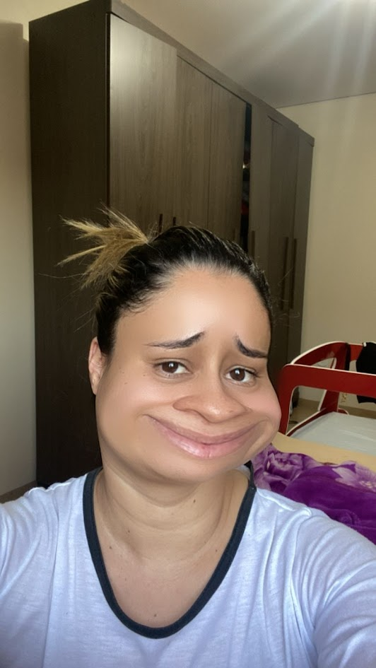

Oi, pois bem, não sou de me expressar muito, então venho através da minha nerdice tentar de alguma forma mostrar o quando cada uma de vocês me moldou para eu estar onde estou agora.
Dona vivi, é tanto minha mãe como minha amiga quanto minha irmã, e em todas suas formas ela me deixa absolutamente feliz e orgulhoso de a ter por perto. Ela simplesmente me mostrou que nenhuma dificuldade, nenhuma dor deve te deixar no chão, mas também tudo bem sentir o que você precisa sentir em determinados momentos, isso não te torna mais fraco. E também ela é muito chata as vezes, mas até isso eu aprendi a gostar.
Eu nem sei por onde começar quando o assunto é a dona zirda, é simplesmente umas das mulheres mais incriveis que já tive o prazer de estar junto e tive o privilégio de ser cuidado. Muito se fala sobre dinheiro, casas, carros, em nascer com infinitos privilégios, mas eu já me sinto completamente rico em poder ficar debaixo das suas asas, em poder te dar bom dia, em tomar um esculacho seu quando vou mal arrumado para o trabalho. Dentre tudo aquilo que eu possar vir a conquistar no futuro absolutamente nada vai ser maior do que a oportunidade que você me deu de te chamar de mãe.
Essa daqui eu sei como começar. EU TE AMOOOOOOOOOO DAAAAAAAAN, meus eternos obrigados por deixar eu dividir com o Enzo um pouco do seu amor. Você me ensina tanto no dia a dia que eu simplesmente não sei como começar a listar, ensinar a ser um homem mais forte, a busca sempre coisas melhores, que ser carinhoso e se cuidar não te torna menos homem, no fim, você é tanto pai quanto mãe, não so acolhe quando o joelho está ralado mas também não tira a coragem de tentar quantas vezes for necessário. E sabe de uma coisa, todos que estão ao seu redor vão sempre estar tentando, porque ao ter você por perto realmente temos a sensação de que tudo é possível. obrigado, mamis.